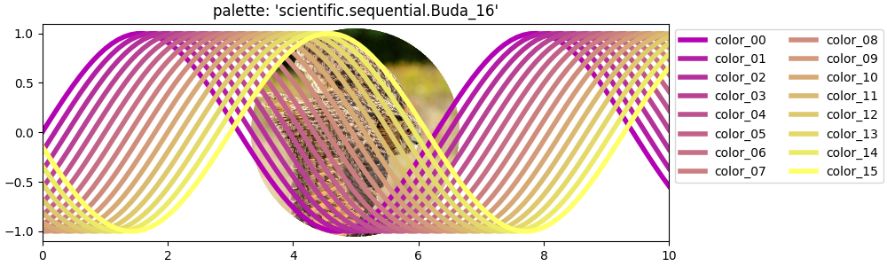

- 시각화에서 색상은 중요한 요소입니다.
- 그러나 관성적으로 프로그램이 제공하는 기본값을 사용하는 분들이 많습니다.
- matplotlib은 푸짐한 상을 차려놓고 우리를 기다리고 있습니다. 골라봅시다.
1. Example Bed
- 화면상에서 색상은 대개 RGB 3채널로 구성됩니다.
- 여기에 불투명도 Alpha가 붙어 RGBA 4채널이 되기도 합니다.
- 같은 색상도 숫자, Hex code, 이름, 순번등 여러가지로 표현됩니다.
- 이들을 그려볼 example bed를 준비합니다.
1.1. Sample Data
- 예제 데이터로 sine curve 다발을 사용할 것입니다.
1
2
3
4
5
6
7
8
9
10X = np.linspace(0, 10, 100)
size=16
fig, ax = plt.subplots(figsize=(10, 3), constrained_layout=True)
# sine wave plot
for i in range(size):
ax.plot(X, np.sin(X - 0.2*i), linewidth=4)
ax.set_xlim(0, 10)
1.2. Background Image
wikipedia: Lena Forsén(Lena Söderberg)
youtube: Losing Lena
women love tech: Losing Lena – Why Removing One Image Will End Tech’s Original Sin
The USC-SIPI Image Database
wikipedia: Eurasian eagle-owl
- 반투명 색상이 잘 표현되는지 확인하기 위해 뒤에 이미지를 깝니다.
- 이럴 때 Lena Forsén(Lena Söderberg)님의 이미지를 많이 사용했습니다.
- 그러나 본인이 더 이상 자신의 이미지를 사용하지 않았으면 좋겠다(“I retired from modelling a long time ago, It’s time I retired from tech, too.”)고 하셨기 때문에 의사를 존중해드리려고 합니다.
- 대신 부엉이를 사용합니다.
- 유라시안 수리부엉이 사진을 가져와서 넣습니다.
ax.twinx()로 메인 axes와 x축을 공유하는 axes를 만들고,OffsetImage와AnnotationBbox를 사용해 한가운데 넣습니다.1
2
3
4
5
6
7
8
9
10
11# image overlay: 위 코드에 추가
from matplotlib.offsetbox import OffsetImage, AnnotationBbox
owl = plt.imread("owl.jpg") # 배경 이미지 읽어오기
ax_owl = ax.twinx() # 이미지가 들어갈 axes 만들기
ax_owl.set_xlim(ax.get_xlim()) # 메인 axes와 x범위 통일 : 혼동 방지
ax_owl.set_ylim(ax.get_ylim()) # 메인 axes와 y범위 통일 : 혼동 방지
oi = OffsetImage(owl, zoom=0.3, alpha=1) # 이미지 삽입 준비
box0 = AnnotationBbox(oi, (5, 0), frameon=False) # 이미지 삽입 좌표 지정, 테두리 삭제
ax_owl.add_artist(box0) # 이미지 삽입
ax_owl.set_zorder(-1)로 순서를 뒤로 옮깁니다.ax의 기본 zorder는 0이기 때문에 부엉이 그림이 sine 곡선 뒤에 놓입니다.- 메인 axes
ax를 투명하게 하는 것을 잊지 않습니다.1
2
3ax_owl.axis(False) # 배경 이미지 눈금 안보이게
ax_owl.set_zorder(-1) # 배경 이미지 axes를 메인 axes뒤로
ax.set_facecolor("none") # 메인 axes를 투명하게
1.3. function: Color Plot
- sine 곡선의 색상을 바꿔가며 그릴 함수를 만듭니다.
- 입력 인자로 colors(
list), title(str)을 의무적으로 받고, style(str)과 prop_cycle(list), 그리고 저장할 파일명을 옵션으로 받게 합니다. - 똑같은 sine curve를 colors에 따라 다른 색으로 그릴 것입니다.
- style과 prop_cycle은 아래에서 설명하겠습니다.
1
2
3
4
5
6
7
8
9
10
11
12
13
14
15
16
17
18
19
20
21
22
23
24
25
26
27
28
29
30
31def plot_color_example(colors, title, style="default", prop_cycle=None, filename=None):
with plt.style.context(style):
fig, ax = plt.subplots(figsize=(10,3), constrained_layout=True)
X = np.linspace(0, 10, 100)
if prop_cycle:
print(f"# prop_cycle={prop_cycle}")
ax.set_prop_cycle('color', prop_cycle)
for i, color in enumerate(colors):
ax.set_facecolor("none")
ax.set_zorder(2)
if prop_cycle or style != "default":
ax.plot(X, np.sin(X-0.2*i), lw=4, label=f"color_{i:02d}")
else:
ax.plot(X, np.sin(X-0.2*i), c=color, lw=4, label=color)
ax.set_title(title, fontsize="large", pad=6)
ax.legend(ncol=2, loc="upper left", bbox_to_anchor=(1,1))
ax.set_xlim(0, 10)
ax_owl = ax.twinx()
ax_owl.set_zorder(-1)
ax_owl.set_ylim(-1, 1)
oi = OffsetImage(owl, zoom = 0.3, alpha=1)
box0 = AnnotationBbox(oi, (5, 0), frameon=False)
ax_owl.add_artist(box0)
ax_owl.axis(False)
if filename:
fig.savefig(filename)
2. Colors
- Matplotlib은 다양한 형태의 색상을 지원합니다.
- 하나하나 그려보며 확인하겠습니다.
2.1. [0~1]
- 채널의 강도를 0~1 사이의 숫자를 이용해서 표현합니다.
- Grayscale, RGB, Alpha(불투명도)를 표현합니다.
2.1.1. Grayscale
- 회색조를 0~1 사이 값
str타입으로 표현할 수 있습니다. - 0이 검정, 1이 흰색입니다.
1
2
3
4colors = [f"{f:.2f}" for f in np.linspace(0, 0.9, size)]
print(colors)
plot_color_example(colors, "Grayscale [0~1]", filename="mpl_colors_09.png") - 실행 결과: 따옴표가 꼭 필요합니다.
1
['0.00', '0.06', '0.12', '0.18', '0.24', '0.30', '0.36', '0.42', '0.48', '0.54', '0.60', '0.66', '0.72', '0.78', '0.84', '0.90']
2.1.2. RGB (array)
- RGB 각 채널을 0~1 사이 값
float3개 array로 표현할 수 있습니다. - 랜덤으로 색상을 추출했습니다.
1
2
3
4
5colors = [(r.round(2), g.round(2), b.round(2)) for r, g, b
in zip(np.random.uniform(0, 1, size=size), np.random.uniform(0, 1, size=size), np.random.uniform(0, 1, size=size))]
print(colors)
plot_color_example(colors, "RGB [0~1]", filename="mpl_colors_10.png") - 실행 결과: 3차원 array입니다.
1
[(0.46, 0.8, 0.32), (0.13, 0.35, 0.6), (0.67, 0.3, 0.52), (0.89, 0.87, 0.72), (0.59, 0.12, 0.22), (0.86, 0.34, 0.55), (0.55, 0.72, 0.9), (0.58, 0.05, 0.16), (0.78, 0.14, 0.58), (0.78, 0.13, 0.51), (0.78, 0.13, 0.31), (0.56, 0.82, 0.57), (0.62, 0.18, 0.76), (0.67, 0.69, 0.69), (0.4, 0.18, 0.93), (0.87, 0.81, 0.65)]
2.1.3. RGBA (array)
- RGB에 Alpha(불투명도)채널 하나를 더 추가합니다.
- 역시 랜덤으로 추출했습니다.
1
2
3
4
5colors = [(r.round(2), g.round(2), b.round(2), a.round(2)) for r, g, b, a
in zip(np.random.uniform(0, 1, size=size), np.random.uniform(0, 1, size=size), np.random.uniform(0, 1, size=size), np.random.uniform(0, 1, size=size))]
print(colors)
plot_color_example(colors, "RGBA [0~1]", filename="mpl_colors_11.png") - 실행 결과: 4차원 array입니다. 선 너머로 그림이 비칩니다.
1
[(0.48, 0.43, 0.92, 0.95), (0.47, 0.17, 0.25, 0.58), (0.93, 0.12, 0.7, 0.6), (0.16, 0.23, 0.79, 0.34), (0.43, 0.05, 0.58, 0.05), (0.5, 0.99, 0.2, 0.75), (0.55, 0.97, 0.51, 0.05), (0.77, 0.79, 0.8, 0.7), (0.85, 0.22, 0.18, 0.13), (0.09, 0.27, 0.41, 0.77), (0.32, 0.41, 0.88, 0.74), (0.6, 0.43, 0.89, 0.02), (0.35, 0.88, 0.74, 0.14), (0.24, 0.31, 0.33, 0.82), (0.49, 0.4, 0.47, 0.82), (0.92, 0.31, 0.93, 0.58)]
2.1.4. RGB or RGBA (hex)
Pega Devlog: Picking and Modifying Colors
Pega Devlog: Matplotlib colors
- RGB 또는 RGBA 형식은 array 외에도 hex code로도 표현됩니다.
- 대소문자는 구분하지 않습니다.
1
2
3
4
5
6
7
8hex_chrs = [str(i) for i in range(10)] # 0 ~ 9
hex_chrs.extend([chr(c) for c in range(65, 71)]) # A ~ F
colors = [f"#{r0}{r1}{g0}{g1}{b0}{b1}{a0}{a1}" for r0, r1, g0, g1, b0, b1, a0, a1
in zip(np.random.choice(hex_chrs, size=size), np.random.choice(hex_chrs, size=size), np.random.choice(hex_chrs, size=size), np.random.choice(hex_chrs, size=size),
np.random.choice(hex_chrs, size=size), np.random.choice(hex_chrs, size=size), np.random.choice(hex_chrs, size=size), np.random.choice(hex_chrs, size=size))]
print(colors)
plot_color_example(colors, "RGB or RGBA [Hex]", filename="mpl_colors_12.png") - 실행 결과: # 뒤에 알파벳 6개(RGB) 또는 8개(RGBA)가 오면 됩니다.
1
[(0.48, 0.43, 0.92, 0.95), (0.47, 0.17, 0.25, 0.58), (0.93, 0.12, 0.7, 0.6), (0.16, 0.23, 0.79, 0.34), (0.43, 0.05, 0.58, 0.05), (0.5, 0.99, 0.2, 0.75), (0.55, 0.97, 0.51, 0.05), (0.77, 0.79, 0.8, 0.7), (0.85, 0.22, 0.18, 0.13), (0.09, 0.27, 0.41, 0.77), (0.32, 0.41, 0.88, 0.74), (0.6, 0.43, 0.89, 0.02), (0.35, 0.88, 0.74, 0.14), (0.24, 0.31, 0.33, 0.82), (0.49, 0.4, 0.47, 0.82), (0.92, 0.31, 0.93, 0.58)]
2.1.5. Utitlities
matplotlib.colors의to_hex()를 사용하면 array가 hex code로 변경됩니다.- 반대 방향은
to_rgb(),to_rgba(),to_rgba_array()로 가능합니다. - 어딘가에서 온 array나 string이 matplotlib 색상 표현에 적합한지 알아보는 명령어도 있습니다.
is_color_like입니다.1
2
3
4
5
6
7
8# check if input is a color
import matplotlib.colors as mcolors
print(f"mcolors.is_color_like((0.16, 0.23, 0.79, 0.34)) = {mcolors.is_color_like((0.16, 0.23, 0.79, 0.34))}")
print(f"mcolors.is_color_like((0.16, 0.23, 0.79, 1.34)) = {mcolors.is_color_like((0.16, 0.23, 0.79, 1.34))}")
print(f"\nmcolors.is_color_like('#4F12226E') = {mcolors.is_color_like('#4F12226E')}")
print(f"mcolors.is_color_like('#4F1226E') = {mcolors.is_color_like('#4F1226E')}")- 실행 결과: 1을 넘는 array, 자릿수가 부족한 hex code는
False가 나옵니다.1
2
3
4
5mcolors.is_color_like((0.16, 0.23, 0.79, 0.34)) = True
mcolors.is_color_like((0.16, 0.23, 0.79, 1.34)) = False
mcolors.is_color_like('#4F12226E') = True
mcolors.is_color_like('#4F1226E') = False
2.2. Strings
- Matplotlib에 string으로 저장된 pre-defined color가 있습니다.
- 네 가지가 있습니다:
BASE_COLORS,XKCD_COLORS,CSS4_COLORS,TABLEAU_COLORS입니다. - dictionary 형태로 float array 또는 hex code와 함께 저장되어 있습니다.
1
2print(type(mcolors.BASE_COLORS))
mcolors.BASE_COLORS - 실행 결과:
1
2
3
4
5
6
7
8
9<class 'dict'>
{'b': (0, 0, 1),
'g': (0, 0.5, 0),
'r': (1, 0, 0),
'c': (0, 0.75, 0.75),
'm': (0.75, 0, 0.75),
'y': (0.75, 0.75, 0),
'k': (0, 0, 0),
'w': (1, 1, 1)}
2.2.1. BASE_COLORS
- 영어 한 글자로 색상을 표현합니다.
- RGB + CMYK + W 입니다.
1
2
3colors = list(mcolors.BASE_COLORS.keys())
plot_color_example(colors, "Base Colors", filename="mpl_colors_13.png")
2.2.2. XKCD_COLORS
- 954개의 가장 흔히 사용되는 색상에 투표로 이름을 붙였다고 합니다.
- 역시 랜덤으로 16개만 골랐습니다.
1
2
3
4
5c_xkcd = list(mcolors.XKCD_COLORS.keys())
print(c_xkcd)
colors = np.random.choice(c_xkcd, replace=False, size=size)
plot_color_example(colors, "XKCD Colors", filename="mpl_colors_14.png")
2.2.3. CSS4_COLORS: “Named Colors”
- 저는 색상을 고를 때 이 색상들을 주로 참고하곤 합니다.
- 세련되고 보기 편한 색상들이 잘 정돈되어 있거든요.
1
2
3
4
5c_css4 = list(mcolors.CSS4_COLORS.keys())
print(c_css4)
colors = np.random.choice(c_css4, replace=False, size=size)
plot_color_example(colors, "Named Colors (CSS4)", filename="mpl_colors_15.png")
2.2.4. TABLEAU_COLORS
matplotlib: what’s new in matplotlib 2.0 > Colors, color cycles, and color maps
- 데이터 시각화에서 태블로를 빼놓기 어렵습니다.
- 태블로의 팔레트를 matplotlib에 심었고, matplotlib 버전 2부터 RGBCMWK를 밀어내고 기본 cycle이 되었습니다.
1
2
3c_tableau = list(mcolors.TABLEAU_COLORS.keys())
plot_color_example(c_tableau, "Tableau Colors", filename="mpl_colors_16.png")
2.3. CN
matplotlib: Specifying Colors
matplotlib: Customizing Matplotlib with style sheets and rcParams
- 지금의 sine curve 예제처럼 plot을 반복해서 그리면 자동으로 색이 변경됩니다.
- matplotlib에서 사용중인 style에 정의된 순환(cycling) 색상들이 순차적으로 적용되는 것입니다.
- 색을 따로 지정하지 않을 경우 첫 plot은
color="C0", 그 다음은"C1"이런 식으로 순차적으로 적용되는데, 이를CN이라고 합니다. - matplotlib 공식 홈페이지에도 CN이 무슨 말의 약자인지는 나와있지 않지만, cycle number로 추정됩니다.
2.3.1. Default: TABLEAU_COLORS
- 논문 그림처럼 복잡한 그림들을 그릴 때 앞에서 사용된 특정 색상을 다시 사용해야 할 때가 있습니다.
- 이럴 때 CN이 매우 유용합니다.
1
2
3
4c_CN = [f"C{i}" for i in range(16)]
print(c_CN)
plot_color_example(c_CN, "'CN' Colors", filename="mpl_colors_17.png") - 실행 결과: 기본값은 Tableau와 같습니다. 10개를 상한으로 다시 C0과 같아집니다.
1
['C0', 'C1', 'C2', 'C3', 'C4', 'C5', 'C6', 'C7', 'C8', 'C9', 'C10', 'C11', 'C12', 'C13', 'C14', 'C15']
2.3.2. Palette
Palettable
seaborn: General principles for using color in plots
matplotlib.axes.Axes.set_prop_cycle
Matplotlib 외부의 팔레트를 가져와 사용할 수 있습니다.
Palettable도 좋고, seaborn도 좋습니다.
ax.set_prop_cycle("color", Palette)형태로 Palette를 지정합니다.1
2
3from palettable.scientific.sequential import Buda_16
plot_color_example(c_CN, "palette: 'scientific.sequential.Buda_16'", prop_cycle=Buda_16.mpl_colors, filename="mpl_colors_18.png")
여러 가지 선택지가 있습니다.
1
2
3from palettable.cartocolors.qualitative import Pastel_8
plot_color_example(c_CN, "palette: 'cartocolors.qualitative.Pastel_8'", prop_cycle=Pastel_8.mpl_colors, filename="mpl_colors_19.png")
2.3.3. Colormap
- colormap에서도 팔레트를 뽑아낼 수 있습니다.
- 먼저
matplotlib.cm.get_cmap()함수를 사용해서 colormap 객체를 만듭니다. - 여기에 괄호로 숫자를 넣어주면 거기에 해당하는 색생이 추출됩니다.
1
2
3
4
5
6from matplotlib import cm
blues = cm.get_cmap("Blues", lut=size)
c_blues = [blues(i) for i in range(size)]
plot_color_example(c_blues, "colormap: 'Blues'", prop_cycle=c_blues, filename="mpl_colors_24.png")
- 경우의 수가 풍족해집니다.
1
2
3
4magma = cm.get_cmap("magma", lut=size)
c_magma = [magma(i) for i in range(size)]
plot_color_example(c_blues, "colormap: 'magma'", prop_cycle=c_magma, filename="mpl_colors_25.png")
2.3.4. style
- matplotlib은 style에 글꼴, 색상 등 많은 정보를 담고 있습니다.
- style을 바꿔서 cyclic color를 변경할 수 있습니다.
- 작성중인 코드 전체의 스타일을 바꿀 때는
plt.style.use()를 사용합니다. - 임시로 사용하겠다면
with plt.style.context():를 사용합니다. - 그런데
plt.style.context()를 사용하면,c=C0등으로 지정하면 기본 style의 cyclic color가 나옵니다. - 색상 자체를 지정하지 않아야
plt.style.context()명령이 의도대로 수행됩니다.
- matplotlib 1.x 기본 색상입니다.
1
plot_color_example(c_CN, "style: 'classic'", style="classic", filename="mpl_colors_20.png")
- ggplot 스타일도 가능합니다.
1
plot_color_example(c_CN, "style: 'ggplot'", style="ggplot", filename="mpl_colors_21.png")
- 강렬한 fivethirtyeight입니다.
1
plot_color_example(c_CN, "style: fivethirtyeight", style="fivethirtyeight", filename="mpl_colors_23.png")
3. 결론
- 인지과학적으로 색은 글자보다 먼저 전달되는 정보입니다.
- 색상만 평소와 다르게 사용하는 것 만으로도 한결 산뜻한 느낌이 들 수 있습니다.
- 데이터의 성격과 시각화 목적에 더 잘 맞는 색상이라면 말할 것도 없을겁니다.